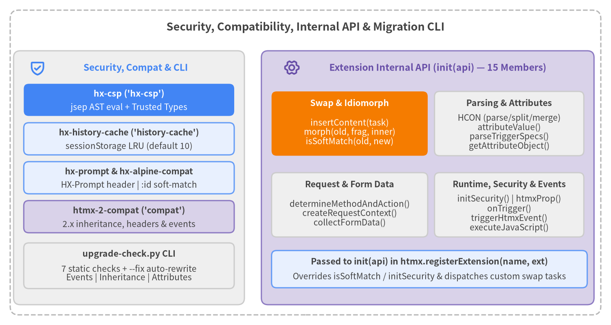

Security, Compatibility, Internal API & CLI
This catalog page documents the security, caching, and compatibility extensions (hx-csp, hx-history-cache, hx-prompt, hx-alpine-compat, htmx-2-compat), the complete 15-member Extension Internal API (internalAPI) passed to htmx.registerExtension(name, { init(api) }), and the upgrade-check CLI migration tool (src/scripts/upgrade-check.py).
Summary Table#
| Symbol | Registered Name / Category | Signature / Attributes / Options | Primary Purpose |
|---|---|---|---|
hx-csp |
'hx-csp' (Security Extension) |
hx-csp script loaded after htmx.js |
Replaces new Function / AsyncFunction with a strict-CSP safe recursive-descent AST evaluator (jsep) and Trusted Types policy ('htmx-csp'). |
hx-history-cache |
'history-cache' (Caching Extension) |
hx-history="false", htmx.config.historyCacheSize |
Caches previous page <body hx-history-elt> snapshots in sessionStorage (htmx-history-cache) and restores instantly on browser Back/Forward (popstate). |
hx-prompt |
'hx-prompt' (UX/Compat Extension) |
hx-prompt="<message>" |
Prompts the user via window.prompt() during htmx:confirm, sending the response in the HX-Prompt request header (evt.detail.prompt). |
hx-alpine-compat |
'alpine-compat' (Compat Extension) |
Overrides api.isSoftMatch |
Preserves Alpine.js dynamic :id and x-bind:id elements during innerMorph / outerMorph when server templates lack static id attributes. |
htmx-2-compat |
'compat' (Compat Extension) |
Restores htmx 2.x defaults & events | Enables implicitInheritance, bridges HX-Trigger* headers, maps hx-vals/hx-headers, aliases legacy hx-* attributes, and re-emits htmx 2.x camelCase events. |
HCON |
api.HCON (internalAPI) |
{ parse(str), split(str), merge(src, dst) } |
Parses htmx Config Object Notation (relaxed JSON, bare keys, dotted paths a.b:1, <.../> tokens), splits top-level commas, and deep-merges safely. |
attributeValue |
api.attributeValue (internalAPI) |
(elt, name, defaultVal?, eltCollector?, allowInheritance?) => string | null |
Resolves an hx-* attribute on elt or its ancestors (:inherited, :append), normalizing prefixes and invoking htmx:after:implicitInheritance. |
parseTriggerSpecs |
api.parseTriggerSpecs (internalAPI) |
(spec) => Array<{ name: string, [mod: string]: any }> |
Parses an hx-trigger specification string into an array of structured trigger spec objects (every, [filter], delay, throttle, from, target). |
determineMethodAndAction |
api.determineMethodAndAction (internalAPI) |
(elt, evt?) => { action: string | undefined, method: string } |
Resolves HTTP method (uppercase, default 'GET') and target URL action from hx-method/hx-action, hx-get..hx-query, or boosted <a>/<form>. |
createRequestContext |
api.createRequestContext (internalAPI) |
(sourceElement, sourceEvent?) => Object |
Constructs the full htmx request context (ctx) with AbortController, resolved target, swap, select, selectOOB, headers, and merged hx-config. |
collectFormData |
api.collectFormData (internalAPI) |
(elt, form, submitter, validate, isGet) => FormData | undefined |
Runs HTML5 reportValidity() when validate is truthy (undefined on failure) and collects FormData from form, non-GET containers, submitter, and hx-include. |
getAttributeObject |
api.getAttributeObject (internalAPI) |
(elt, attrName, callback, scope?) => Promise<void> | undefined |
Evaluates an HCON/JSON or js:/javascript: object attribute (e.g., hx-vals, hx-headers) and passes the resolved object to callback(obj). |
insertContent |
api.insertContent (internalAPI) |
(task, cssTransition?) => Promise<void> |
Executes a swap task (innerHTML, outerHTML, innerMorph, outerMorph, etc.), handles [hx-preserve], transitions, settle events, <script> activation, and htmx.process(). |
morph |
api.morph (internalAPI) |
(oldNode, fragment, innerHTML) => void |
Runs the Idiomorph DOM morphing algorithm with persistent ID maps, pantry staging, morphIgnore/morphSkip, and htmx:before:morph:node/attr hooks. |
isSoftMatch |
api.isSoftMatch (internalAPI) |
(oldNode, newNode) => boolean |
Determines whether oldNode and newNode share the same tagName and compatible id (or identical <script>) during Idiomorph candidate matching. |
initSecurity |
api.initSecurity (internalAPI) |
(ttPolicy, syncFn, asyncFn) => void |
Replaces htmx core's internal Trusted Types policy (createHTML, createScript), synchronous #Function, and asynchronous #AsyncFunction constructors. |
onTrigger |
api.onTrigger (internalAPI) |
(elt, specString, handler) => void |
Parses specString and attaches full hx-trigger event listeners (load, revealed, intersect, every, filters, delay, throttle, from) to elt. |
htmxProp |
api.htmxProp (internalAPI) |
(elt) => { listeners: Array, triggerSpecs: Array } |
Lazily initializes and returns elt._htmx state storage and stamps data-htmx-powered="true" on elt. |
triggerHtmxEvent |
api.triggerHtmxEvent (internalAPI) |
(on, eventName, detail?, bubbles?) => boolean |
Invokes matching extension lifecycle hooks (htmx_<event>) and dispatches a cancelable, composed CustomEvent, returning false if cancelled. |
executeJavaScript |
api.executeJavaScript (internalAPI) |
(thisArg, obj, code, expression?, isAsync?, compile?) => any |
Fires htmx:scope, binds htmx helpers to thisArg, and evaluates or compiles (compile=true) JavaScript expressions/statements via #AsyncFunction / #Function. |
upgrade-check |
src/scripts/upgrade-check.py (CLI) |
python3 upgrade-check.py [paths...] [--fix] [--no-color] |
Static analysis & auto-migration CLI auditing HTML/templates and JS/TS files across 7 breaking-change categories from htmx 2.x to htmx 4.0. |

Source Code
from drawlib.canvas import save, setup
from drawlib.icons import phosphor
from drawlib.lines import line
from drawlib.shapes import rectangle
from drawlib.styles import Styles
from drawlib.text import text
setup(width=180, height=96, dpi=150)
# Outer frame
rectangle((90, 48), width=174, height=90, style=Styles.MutedDashed.patch(shape_r=2.5))
text(
(90, 88.0),
"Security, Compatibility, Internal API & Migration CLI",
style=Styles.DarkBold.patch(text_size=13.0),
)
# Left Column: Security, Caching & Compatibility Extensions + CLI
rectangle((38, 43.5), width=68, height=75, style=Styles.Neutral.patch(shape_r=2.0))
phosphor.shield_check((11, 76), width=4.8, style=Styles.PrimaryBold)
text((40, 76), "Security, Compat & CLI", style=Styles.PrimaryBold.patch(text_size=11.0))
# Focal Point 1: hx-csp
rectangle((38, 66.5), width=62, height=9.5, style=Styles.PrimaryFlat.patch(shape_r=1.5))
text((38, 68.3), "hx-csp ('hx-csp')", style=Styles.WhiteBold.patch(text_size=10.2))
text((38, 64.3), "jsep AST eval + Trusted Types", style=Styles.White.patch(text_size=10.0))
rectangle((38, 55.0), width=62, height=9.5, style=Styles.PrimaryNeutral.patch(shape_r=1.5))
text((38, 56.8), "hx-history-cache ('history-cache')", style=Styles.DarkBold.patch(text_size=10.0))
text((38, 52.8), "sessionStorage LRU (default 10)", style=Styles.Dark.patch(text_size=10.0))
rectangle((38, 43.5), width=62, height=9.5, style=Styles.PrimaryNeutral.patch(shape_r=1.5))
text((38, 45.3), "hx-prompt & hx-alpine-compat", style=Styles.DarkBold.patch(text_size=10.0))
text((38, 41.3), "HX-Prompt header | :id soft-match", style=Styles.Dark.patch(text_size=10.0))
rectangle((38, 32.0), width=62, height=9.5, style=Styles.SecondaryNeutral.patch(shape_r=1.5))
text((38, 33.8), "htmx-2-compat ('compat')", style=Styles.DarkBold.patch(text_size=10.2))
text((38, 29.8), "2.x inheritance, headers & events", style=Styles.Dark.patch(text_size=10.0))
rectangle((38, 17.5), width=62, height=13.5, style=Styles.Neutral.patch(shape_r=1.5))
text((38, 21.0), "upgrade-check.py CLI", style=Styles.DarkBold.patch(text_size=10.2))
text((38, 15.2), "7 static checks + --fix auto-rewrite\nEvents | Inheritance | Attributes", style=Styles.Dark.patch(text_size=10.0))
# Right Panel: Extension Internal API (internalAPI — 15 members)
rectangle((126, 43.5), width=98, height=75, style=Styles.SecondaryNeutral.patch(shape_r=2.0))
phosphor.gear_six((86, 76), width=4.8, style=Styles.SecondaryBold)
text((129, 76), "Extension Internal API (init(api) — 15 Members)", style=Styles.SecondaryBold.patch(text_size=11.0))
# Focal Point 2: Swap & Idiomorph Engine
rectangle((103, 59.5), width=46, height=19, style=Styles.AccentFlat.patch(shape_r=1.5))
text((103, 65.5), "Swap & Idiomorph", style=Styles.WhiteBold.patch(text_size=10.2))
text((103, 57.0), "insertContent(task)\nmorph(old, frag, inner)\nisSoftMatch(old, new)", style=Styles.White.patch(text_size=10.0))
rectangle((150, 59.5), width=44, height=19, style=Styles.Neutral.patch(shape_r=1.5))
text((150, 65.5), "Parsing & Attributes", style=Styles.DarkBold.patch(text_size=10.2))
text((150, 57.0), "HCON (parse/split/merge)\nattributeValue()\nparseTriggerSpecs()\ngetAttributeObject()", style=Styles.Dark.patch(text_size=10.0))
rectangle((103, 35.5), width=46, height=19, style=Styles.Neutral.patch(shape_r=1.5))
text((103, 41.5), "Request & Form Data", style=Styles.DarkBold.patch(text_size=10.2))
text((103, 33.0), "determineMethodAndAction()\ncreateRequestContext()\ncollectFormData()", style=Styles.Dark.patch(text_size=10.0))
rectangle((150, 35.5), width=44, height=19, style=Styles.Neutral.patch(shape_r=1.5))
text((150, 41.5), "Runtime, Security & Events", style=Styles.DarkBold.patch(text_size=10.0))
text((150, 33.0), "initSecurity() | htmxProp()\nonTrigger()\ntriggerHtmxEvent()\nexecuteJavaScript()", style=Styles.Dark.patch(text_size=10.0))
rectangle((126.5, 16.5), width=93, height=11, style=Styles.PrimaryNeutral.patch(shape_r=1.5))
text((126.5, 18.7), "Passed to init(api) in htmx.registerExtension(name, ext)", style=Styles.DarkBold.patch(text_size=10.2))
text((126.5, 14.3), "Overrides isSoftMatch / initSecurity & dispatches custom swap tasks", style=Styles.Dark.patch(text_size=10.0))
save()
Security, Caching & Compatibility Extensions#
hx-csp (hx-csp)#
Replaces htmx core's dynamic code compilation (new Function and new AsyncFunction) and raw innerHTML assignment with a strict Content Security Policy (CSP) compliant AST evaluator (jsep) and a Trusted Types pass-through policy ('htmx-csp'), enabling htmx (hx-on:*, hx-vals="js:...", hx-headers="js:...", and hx-live) to run without 'unsafe-eval'.
Extension Registration & Hook Mechanics
- Registered Name:
'hx-csp'(src/ext/hx-csp.js) init(api):- Creates a Trusted Types policy via
window.trustedTypes.createPolicy('htmx-csp', { createHTML: s => s, createScript: s => s })(or falls back to{ createHTML: s => s, createScript: s => s }when Trusted Types are unavailable or policy creation throws). - Calls
api.initSecurity(policy, cspFunction(false), cspFunction(true))to replace htmx's internal#ttPolicy, synchronous#Function, and asynchronous#AsyncFunctionconstructors.
- Creates a Trusted Types policy via
Supported JavaScript Subset (JSEP AST Evaluator)
- Supported Expressions:
- Literals (
Literal), identifiers (Identifier),this(ThisExpression), template literals (TemplateLiteral), arrays (ArrayExpression), and object literals (ObjectExpression, including spread...). - Property access (
MemberExpressionwith.and[], including optional chaining?.and method binding), function/method calls (CallExpressionwith?.()and...spread), andnewconstruction (NewExpressionon safe constructors). - Unary operators (
!,+,-,~,typeof,void,delete,await), update operators (++,--prefix/postfix), binary operators (+,-,*,/,%,**,==,!=,===,!==,<,>,<=,>=,<<,>>,>>>,&,|,^,in,instanceof), logical operators (&&,||,??), ternary (ConditionalExpression), and comma sequences (SequenceExpression). - Assignments (
=,+=,-=,*=,/=,%=,**=,||=,&&=,??=), single/multi-param arrow functions (x => ...,(a, b) => ...,async () => ...), and semicolon-separated statements (Compound) withreturn.
- Literals (
- Blocked Constructs (Security Sandboxing):
- Blocks access to dangerous properties via
BLOCKED_PROPS:'constructor','__proto__', and'prototype'(returnsundefinedand ignores writes). - Blocks calls to dangerous globals via
BLOCKED_CALLS:eval,Function,AsyncFunction,GeneratorFunction,AsyncGeneratorFunction, plus string-basedsetTimeout('...')andsetInterval('...')(throwsError('Blocked by hx-csp')).
- Blocks access to dangerous properties via
<!-- Enforce strict CSP without 'unsafe-eval' -->
<meta http-equiv="Content-Security-Policy"
content="default-src 'self'; script-src 'self'; require-trusted-types-for 'script'; trusted-types htmx-csp;">
<script src="/htmx.js"></script>
<script src="/ext/hx-csp.js"></script>
<body hx-ext="hx-csp">
<button hx-post="/like"
hx-vals="js:{ count: Number(this.dataset.count) + 1 }"
hx-on:click="this.dataset.count = Number(this.dataset.count) + 1"
data-count="4">
Like
</button>
</body>
hx-history-cache (history-cache)#
Snapshots the current page's history element ([hx-history-elt] or document.body) into sessionStorage ('htmx-history-cache') before htmx pushes or replaces history entries, and restores cached HTML directly on browser Back/Forward (popstate) navigation without a network round-trip.
Configuration & Attributes
- Registered Name:
'history-cache'(src/ext/hx-history-cache.js) hx-history="false": When placed on any element in the document (htmx.find('[hx-history="false"]')), disables caching for the current URL and purges any existing cache entry for that path.htmx.config.historyCacheSize: Maximum number of URL entries retained in the LRU cache insidesessionStorageunder key'htmx-history-cache'. Defaults to10. Setting<= 0disables caching and removes'htmx-history-cache'.
Lifecycle Events & Hooks
- Before History Update (
htmx_before_historyUpdate):- Triggered before
pushState/replaceState. CallssaveToCache(normalizePath(location.pathname + location.search), getHistoryElement())to snapshotcleanInnerHTML(historyElt)before the new history entry is written, and markshistory.state = { ...history.state, cached: true }.
- Triggered before
- On Browser Back/Forward (
htmx_before_restoreHistory):- Checks the LRU cache in
sessionStoragefordetail.path. - Cache Hit: Fires
htmx:historyCacheHit({ path, content }). If not prevented, swapscontentinto[hx-history-elt]/document.bodyviaapi.insertContent({ type: 'innerHTML', target, content, transition: htmx.config.transitions }), dispatcheshtmx:after:restoreHistory({ path, cacheMiss: false }), and returnsfalseto cancel core's network reload. - Cache Miss: Fires
htmx:historyCacheMiss({ path }) and allows htmx core to perform its standard network restore.
- Checks the LRU cache in
- Sanitization (
cleanInnerHTML): Clones the history element, removes all[hx-Vals]nodes and strips transient.htmx-request/.htmx-settlingclasses before serializing tosessionStorage.
<script src="/ext/hx-history-cache.js"></script>
<script>
htmx.config.historyCacheSize = 20; // Keep up to 20 pages in sessionStorage
</script>
<body hx-ext="history-cache" hx-history-elt>
<nav>
<a hx-get="/products?page=2" hx-push-url="true" hx-target="#main">Page 2</a>
</nav>
<main id="main">...</main>
</body>
hx-prompt (hx-prompt)#
Intercepts the htmx:confirm lifecycle event on elements with hx-prompt (or inherited hx-prompt), displays a synchronous browser window.prompt() dialog, and attaches the user's input to both the HX-Prompt request header and evt.detail.prompt.
Attributes & Request Header
- Registered Name:
'hx-prompt'(src/ext/hx-prompt.js) hx-prompt="<message>": Evaluates viaapi.attributeValue(elt, 'hx-prompt')(supports:inheritedorimplicitInheritance).- Cancellation Behavior: If the user clicks Cancel (
window.prompt()returnsnull),htmx_confirmreturnsfalse, aborting the htmx request beforeissueRequest()runs. - Header & Event Detail: When confirmed, sets
evt.detail.prompt = responseand setsevt.detail.ctx.request.headers['HX-Prompt'] = response.
<script src="/ext/hx-prompt.js"></script>
<div hx-ext="hx-prompt">
<button hx-delete="/account/api-key/42"
hx-prompt="Type your key name to confirm deletion:"
hx-target="#key-row-42"
hx-swap="delete">
Revoke API Key
</button>
</div>
hx-alpine-compat (alpine-compat)#
Patches htmx's internal Idiomorph node-matching predicate (api.isSoftMatch) so that elements whose id attribute is dynamically bound by Alpine.js (:id or x-bind:id) are still matched and morphed in-place against incoming server HTML fragments that lack a static id attribute.
Internal Mechanism
- Registered Name:
'alpine-compat'(src/ext/hx-alpine-compat.js) - Why It Is Needed: In standard Idiomorph (
api.isSoftMatch(oldNode, newNode)), ifoldNodehas a populatedoldNode.id(set at runtime by Alpine's:id/x-bind:id) while the server-renderednewNodeonly carries:id="item.id"and hasnewNode.id === "",oldNode.id === newNode.idevaluates tofalse, causing Idiomorph to destroy and recreate the DOM node (losing Alpine component state). - Override Logic: Wraps
api.isSoftMatchso that if the originalorigSoftMatch(oldNode, newNode)returnsfalse, it checks(oldNode.hasAttribute(':id') || oldNode.hasAttribute('x-bind:id')) && !newNode.idalongside matchingoldNode.tagName === newNode.tagName(andisEqualNodeforSCRIPT).
<script src="/ext/hx-alpine-compat.js"></script>
<div hx-ext="alpine-compat"
x-data="{ items: [{ id: 'row-1', label: 'Alpha' }] }"
hx-get="/items-fragment"
hx-swap="innerMorph">
<template x-for="item in items" :key="item.id">
<div :id="item.id" x-text="item.label"></div>
</template>
</div>
htmx-2-compat (compat)#
Provides a comprehensive compatibility layer that restores htmx 2.x configuration defaults, attribute inheritance, legacy attribute aliases, HX-Trigger* response header event dispatching, hx-vals / hx-headers request injection, and htmx 2.x camelCase lifecycle event names.
Compatibility Features & Restored Defaults
- Registered Name:
'compat'(src/ext/htmx-2-compat.js) - Configuration Defaults (
init):- Sets
htmx.config.implicitInheritance = true(restoring automatic inheritance forhx-target,hx-swap,hx-select, etc.). - Sets
htmx.config.defaultSwap = 'innerHTML'. - Sets
htmx.config.extensions = 'hx-prompt'(auto-enablinghx-prompt).
- Sets
- Attribute Transformations (
htmx_before_process&htmx_after_implicitInheritance):- Renames
hx-history-elttohx-historyon elements (htmx_before_process). - Normalizes
hx-swapvalues'morph'and'morph:innerHTML'->'innerMorph', and'morph:outerHTML'->'outerMorph'. - Maps
hx-disinherit="*"->hx-inherit="false". - Maps
hx-params="*"->hx-include:inherited="*"andhx-params="none"->hx-include:inherited="none"(warns on comma-separated filter lists). - Translates
hx-sync="<selector>:<strategy>"intohx-config='{"actionQueue": {"scope": "<selector>", "strategy": "<strategy>"}}'. - Logs warnings when deprecated
hx-varsorhx-ext="ignore:..."are encountered.
- Renames
hx-vals&hx-headersEvaluation (htmx_config_request):- Collects inherited and local
hx-valsviaapi.getAttributeObjectand merges resolved key/value pairs intoctx.request.body(FormData). - Collects inherited and local
hx-headersviaapi.getAttributeObjectand merges resolved headers intoctx.request.headers.
- Collects inherited and local
HX-Trigger*Response Headers (htmx_after_request,htmx_after_swap,htmx_after_settle):- Parses
HX-Trigger,HX-Trigger-After-Swap, andHX-Trigger-After-Settle(supporting both JSON objects{"evt": detail}and comma-separated event names) and dispatches them viahtmx.trigger().
- Parses
- Legacy 2.x Event Mapping:
- Re-emits htmx 4.0 colon-delimited lifecycle events under their htmx 2.x camelCase names (
htmx:beforeRequest,htmx:afterRequest,htmx:configRequest,htmx:beforeSwap,htmx:afterSwap,htmx:beforeOnLoad,htmx:afterOnLoad,htmx:beforeProcessNode,htmx:afterProcessNode,htmx:beforeSend,htmx:responseError,htmx:sendError,htmx:sendAbort,htmx:timeout,htmx:oobBeforeSwap,htmx:oobAfterSwap,htmx:beforeTransition,htmx:historyRestore,htmx:beforeHistoryUpdate,htmx:pushedIntoHistory,htmx:replacedInHistory) and synthesizesxhr(status,statusText,response,responseText,getResponseHeader,getAllResponseHeaders) ondetail.xhr.
- Re-emits htmx 4.0 colon-delimited lifecycle events under their htmx 2.x camelCase names (
- Legacy
htmx.*Global Helpers:- Restores
htmx.values(elt, type),htmx.remove(elt, delay?),htmx.addClass(elt, cls, delay?),htmx.removeClass(elt, cls, delay?),htmx.toggleClass(elt, cls),htmx.closest(elt, selector), andhtmx.defineExtension(name, ext)(adaptingonEventandtransformResponsehooks to htmx 4.0).
- Restores
<script src="/htmx.js"></script>
<script src="/ext/hx-prompt.js"></script>
<script src="/ext/htmx-2-compat.js"></script>
<body hx-ext="compat">
<!-- Legacy 2.x attributes, events, and implicit inheritance work seamlessly -->
<div hx-target="#output" hx-vals='{"source": "legacy-panel"}'>
<button hx-post="/submit"
hx-on:htmx:after-request="console.log(event.detail.xhr.status)">
Submit (2.x Compat)
</button>
</div>
<div id="output"></div>
</body>
Extension Internal API (internalAPI)#
When an extension is registered via htmx.registerExtension(name, extensionDefinition), htmx invokes extensionDefinition.init(internalAPI) once, passing the 15-member internalAPI object (#internalAPI in src/htmx.js). Extensions can call these internal primitives directly or wrap/override methods such as api.isSoftMatch or api.initSecurity.
HCON#
Provides htmx's lightweight HCON (htmx Config Object Notation) parser, top-level comma splitter, and prototype-pollution-safe deep object merger.
Object Signature & Methods
interface HCON {
parse(string: string): Record<string, any>;
split(string: string): string[];
merge(source: Record<string, any>, target: Record<string, any>): Record<string, any>;
}
api.HCON.parse(string):- Fast-paths standard
JSON.parse(string)if valid JSON object. - Otherwise strips optional outer
{ ... }and parses relaxed key-value pairs separated by commas or whitespace:- Keys can be unquoted identifiers, dotted paths (
actionQueue.strategy: 'drop'->{ actionQueue: { strategy: 'drop' } }), or single/double-quoted strings. - Values can be
true,false,null, finite numbers, quoted strings (with\escapes), nested{...}/[...]JSON structures,<.../>hyperscript/selector tokens, or bare tokens. - Valueless keys default to
true(e.g.,"once changed delay:300ms"->{ once: true, changed: true, delay: "300ms" }).
- Keys can be unquoted identifiers, dotted paths (
- Fast-paths standard
api.HCON.split(string):- Splits a string on top-level commas
,while ignoring commas inside(...),[...],<.../>,'...', and"...".
- Splits a string on top-level commas
api.HCON.merge(source, target):- Recursively merges properties from
sourceintotargetand returnstarget. Skips'__proto__','constructor', and'prototype'keys to prevent prototype pollution.
- Recursively merges properties from
htmx.registerExtension('custom-config', {
init(api) {
const specs = api.HCON.split('click[ctrlKey, shiftKey], keyup delay:200ms');
// ['click[ctrlKey, shiftKey]', 'keyup delay:200ms']
const parsed = api.HCON.parse('actionQueue.strategy: drop, timeout: 5000, once');
// { actionQueue: { strategy: 'drop' }, timeout: 5000, once: true }
}
});
attributeValue#
Resolves an htmx attribute value on elt or its DOM ancestors, automatically respecting htmx.config.prefix, htmx.config.metaCharacter, explicit :inherited / :append modifiers, hx-inherit, and htmx.config.implicitInheritance.
Signature & Parameters
attributeValue(
elt: Element,
name: string,
defaultVal?: any,
eltCollector?: (val: string, ownerElt: Element) => void,
allowInheritance?: boolean // defaults to htmx.config.implicitInheritance
): string | null | any
- Resolution Rules:
- Normalizes
nameusingadjustName()(applyinghtmx.config.prefixandhtmx.config.metaCharacter). - Checks
eltdirectly fornameorname:inherited. - If
:appendor:inherited:appendis present, collects values up the ancestor chain and concatenates them with,. - Walks parent elements checking
:inheritedattributes (or standard attributes whenallowInheritanceorhx-inheritpermits inheritance). - If resolved via
implicitInheritanceon an ancestor, triggershtmx:after:implicitInheritance({ elt, parent }). - Calls
eltCollector(val, ownerElt)for each contributing element when provided, or returnsdefaultValif no attribute is found.
- Normalizes
htmx.registerExtension('custom-attr-reader', {
init(api) {
this.api = api;
},
htmx_config_request(elt, detail) {
const team = this.api.attributeValue(elt, 'hx-team', 'default-team');
detail.ctx.request.headers['X-Team'] = team;
}
});
parseTriggerSpecs#
Parses an hx-trigger attribute string into an array of normalized trigger specification objects.
Signature & Return Value
parseTriggerSpecs(spec: string): Array<{
name: string;
filter?: string;
changed?: boolean;
once?: boolean;
consume?: boolean;
stop?: boolean;
prevent?: boolean;
halt?: boolean;
capture?: boolean;
passive?: boolean;
delay?: string | number;
throttle?: string | number;
from?: string;
target?: string;
queue?: string;
root?: string;
threshold?: string | number;
[key: string]: any;
}>
- Parsing Mechanics:
- Splits
specon top-level commas viaHCON.split(spec). - Rewrites
every <interval> [condition]intoevery[condition] <interval>so polling conditions are extracted uniformly. - Extracts
[...]bracket filter expressions intotriggerSpec.filter(throws"unterminated:" + nameif closing]is missing). - Parses remaining space-separated modifiers via
HCON.parse(rest)and setstriggerSpec.nameto the event name (e.g.,'click','every','intersect','revealed','load').
- Splits
const specs = api.parseTriggerSpecs('keyup[key=="Enter"] changed delay:250ms from:body, load once');
// [
// { name: 'keyup', filter: 'key=="Enter"', changed: true, delay: '250ms', from: 'body' },
// { name: 'load', once: true }
// ]
determineMethodAndAction#
Determines the HTTP method (uppercase) and target URL (action) for an element and triggering DOM event.
Signature & Return Value
determineMethodAndAction(
elt: Element,
evt?: Event
): { action: string | undefined; method: string }
- Resolution Precedence:
- Explicit
hx-methodandhx-actionattributes onelt. - Verb attributes in order:
hx-get,hx-post,hx-put,hx-patch,hx-delete,hx-query(checked viaelt.hasAttribute()). - If
eltis boosted (isBoosted(elt)):- For
<a href="...">:action = elt.getAttribute('href'),method = 'GET'. - For
<form>: inspectsevt?.submitter(formAction/formmethod) before falling back toelt.getAttribute('action')andelt.getAttribute('method').
- For
- Defaults
methodto'GET'(uppercased).
- Explicit
const { method, action } = api.determineMethodAndAction(buttonElt, submitEvent);
// e.g. { method: 'POST', action: '/api/items' }
createRequestContext#
Constructs the complete htmx request context object (ctx) used throughout the request, swap, and history pipeline.
Signature & Context Shape
createRequestContext(sourceElement: Element, sourceEvent?: Event): {
sourceElement: Element;
sourceEvent?: Event;
status: string;
select: string | null;
selectOOB: string | null;
target: Element | string | null;
swap: string | null;
push: string | null;
replace: string | null;
transition: boolean | string | null;
confirm: string | null;
request: {
validate: boolean;
action: string | undefined;
anchor: string | undefined;
method: string;
headers: Record<string, string>;
abort: () => void;
credentials: RequestCredentials;
signal: AbortSignal;
mode: RequestMode;
};
}
- Key Initialization Steps:
- Creates an
AbortController(request.abort = () => abortController.abort(),request.signal = abortController.signal). - Calls
determineMethodAndAction(sourceElement, sourceEvent)and strips any#anchorhash fromactionintorequest.anchorwhenmethod === 'GET'. - Resolves
target(hx-targetorsourceElement),swap(hx-swap),select(hx-select),selectOOB(hx-select-oob),push(hx-push-url),replace(hx-replace-url),transition(hx-transition), andconfirm(hx-confirm). - Populates standard request headers:
HX-Request: 'true',HX-Source(tagName#id),HX-Current-URL,Accept: 'text/html, */*; q=0.9',HX-Boosted: 'true'(when boosted), andHX-Target(when target has anid). - Applies
hx-boostoverrides and deep-mergeshx-configviaHCON.merge(), while enforcingctx.request.mode = htmx.config.mode.
- Creates an
const ctx = api.createRequestContext(elt, event);
ctx.request.headers['X-Extension-Trace'] = 'enabled';
collectFormData#
Validates associated form controls (when validate is truthy) and builds a FormData instance containing inputs from the enclosing <form>, non-GET container, submitter button, and any hx-include selectors.
Signature & Behavior
collectFormData(
elt: Element,
form: HTMLFormElement | null,
submitter: HTMLElement | null,
validate: boolean,
isGet: boolean
): FormData | undefined
- Validation & Collection Rules:
- If
formis present: validatesform.reportValidity()(returningundefinedif invalid) and initializesnew FormData(form). - If
formis absent andeltis a<form>or non-isGetelement: validateseltand its descendant inputs viareportValidity(), then copies all named[name]inputs insideeltintoFormData. - Appends
submitter.name/submitter.valuewhen a named submitter triggered the request outsideform. - Resolves
hx-include(api.attributeValue(elt, 'hx-include')), validates included elements whenvalidateis truthy, and merges their values intoFormData.
- If
const formData = api.collectFormData(elt, elt.form, null, true, false);
if (!formData) return; // Validation failed
getAttributeObject#
Reads an attribute containing either HCON/JSON or a js: / javascript: dynamic expression (such as hx-vals or hx-headers), evaluates it, and invokes callback(resolvedObject).
Signature & Sync/Async Execution
getAttributeObject(
elt: Element,
attrName: string,
callback: (obj: Record<string, any>) => void,
scope?: Record<string, any>
): Promise<void> | undefined
- Behavior:
- Looks up
attrNameonelt. If empty or missing, returnsundefinedwithout callingcallback. - Static HCON / JSON: Parses synchronously via
HCON.parse(hxAttr), invokescallback(obj)immediately, and returnsundefined. - Dynamic
js:/javascript:Prefix: Strips the prefix, wraps the expression in{ ... }if not already wrapped, evaluates asynchronously viaexecuteJavaScript(elt, scope, code, true, true), and returns aPromisethat callscallback(obj)when resolved.
- Looks up
await api.getAttributeObject(elt, 'hx-vals', (vals) => {
for (const [k, v] of Object.entries(vals)) {
ctx.request.body.set(k, v);
}
}, { event });
insertContent#
Executes a single DOM swap task (task), handling CSS View Transitions, [hx-preserve] element retention, Idiomorph or standard HTML insertion, settle lifecycle events, <script> tag activation, htmx.process() initialization, and scroll/focus restoration.
Signature & Task Object Properties
insertContent(
task: {
type: 'innerHTML' | 'outerHTML' | 'outerSync' | 'innerMorph' | 'outerMorph' |
'textContent' | 'beforebegin' | 'afterbegin' | 'beforeend' | 'afterend' |
'delete' | 'none' | string;
target: Element | string;
content?: string | DocumentFragment | Node;
select?: string | null;
strip?: boolean;
focus?: boolean | string;
scroll?: 'top' | 'bottom' | string;
anchor?: string;
transition?: boolean;
settleDelay?: number;
ctx?: Object;
},
cssTransition?: boolean // default true
): Promise<void>
- Execution Pipeline:
- Resolves
task.target(viahtmx.findif string). Iftask.transition && cssTransition && document.startViewTransition, wraps execution in a View Transition. - Parses
task.contentinto aDocumentFragment, appliestask.strip(unwrapping first root element) andtask.selectfiltering. - Saves
[hx-preserve]elements byidinto a temporary pantry before swap and restores them afterward. - Executes the swap strategy (
innerHTML,outerHTML,outerSyncviamoveBefore,innerMorph,outerMorph,textContent, adjacent insertions,delete,none, or custom extensionhandle_swap(task)). - Fires
htmx:before:settle, waitssettleDelayif specified, activates<script>tags (unlesshtmx.config.allowScriptTags === false), callshtmx.process()on newly inserted elements, and fireshtmx:after:settle. - Executes
task.focusandtask.scroll/task.anchorscrolling.
- Resolves
await api.insertContent({
type: 'innerMorph',
target: '#live-feed',
content: '<div id="item-1">Updated via internalAPI</div>',
transition: true
});
morph#
Runs htmx's built-in Idiomorph DOM morphing algorithm to transform oldNode (or its children) to match fragment while preserving existing DOM nodes, focus state, and CSS transitions.
Signature & Parameters
morph(
oldNode: Element | Document,
fragment: Node | DocumentFragment,
innerHTML?: boolean // true for innerMorph, false for outerMorph
): void
- Algorithm & Extension Hooks:
- Builds persistent ID sets (
idMap) across botholdNodeandfragmentusing__createIdMaps. - Stages unmatched existing nodes in a hidden
divpantry (__createPantry) and usesmoveBefore(when supported) orinsertBeforeto relocate matched nodes without destroying state. - Respects
htmx.config.morphIgnore(attributes ignored during attribute sync),htmx.config.morphSkip(selector of subtrees skipped entirely),htmx.config.morphSkipChildren(selector whose children are skipped), andhtmx.config.morphScanLimit. - Fires extension hooks
htmx:before:morph:node({ oldNode, newNode }) andhtmx:before:morph:attr({ attr, type, node }); returningfalsecancels morphing that node or attribute.
- Builds persistent ID sets (
const template = document.createElement('template');
template.innerHTML = '<ul id="list"><li id="a">Item A (Updated)</li></ul>';
api.morph(document.getElementById('list'), template.content, false); // outerMorph
isSoftMatch#
Default node-compatibility predicate used by api.morph to determine whether an existing DOM element oldNode can be morphed into newNode when no exact id match is required.
Signature & Matching Rules
isSoftMatch(oldNode: Node, newNode: Node): boolean
- Default Logic:
- Returns
trueif and only if:oldNode.nodeType === Node.ELEMENT_NODEoldNode.tagName === newNode.tagName(oldNode.tagName !== 'SCRIPT' || oldNode.isEqualNode(newNode))(!oldNode.id || oldNode.id === newNode.id)
- Returns
- Extension Overriding: Stored directly as a property on
#internalAPI(this.#internalAPI.isSoftMatch(oldElt, newHead)), allowing extensions likehx-alpine-compatto wrap and overrideapi.isSoftMatchduringinit(api).
htmx.registerExtension('custom-soft-match', {
init(api) {
const orig = api.isSoftMatch;
api.isSoftMatch = (oldNode, newNode) => {
if (oldNode.dataset?.morphKey && oldNode.dataset.morphKey === newNode.dataset?.morphKey) {
return oldNode.tagName === newNode.tagName;
}
return orig(oldNode, newNode);
};
}
});
initSecurity#
Replaces htmx core's internal Trusted Types policy (#ttPolicy), synchronous function compiler (#Function), and asynchronous function compiler (#AsyncFunction).
Signature & Parameters
initSecurity(
ttPolicy: { createHTML: (s: string) => any; createScript: (s: string) => any },
syncFn: (...args: string[]) => Function,
asyncFn: (...args: string[]) => Function
): void
- Usage: Used by security extensions such as
hx-cspto replace dynamicnew Function/new AsyncFunctionevaluation with a custom AST interpreter and register a Trusted Types policy forinnerHTML/<script>creation.
htmx.registerExtension('my-security-policy', {
init(api) {
const policy = window.trustedTypes.createPolicy('my-app-policy', {
createHTML: (html) => DOMPurify.sanitize(html),
createScript: (script) => script
});
api.initSecurity(policy, Function, Object.getPrototypeOf(async function(){}).constructor);
}
});
onTrigger#
Parses an hx-trigger specification string (specString) and attaches all corresponding event listeners, polling timers, intersection observers, and modifier pipelines to elt.
Signature & Supported Trigger Mechanics
onTrigger(
elt: Element,
specString: string,
handler: (elt: Element, evt: Event) => void
): void
- Capabilities:
- Parses
specStringviaparseTriggerSpecs(specString)and records the parsed specs inhtmxProp(elt).triggerSpecs. - Supports special triggers (
load,revealed,intersectwithroot/threshold, andevery <interval>) as well as arbitrary DOM events. - Evaluates modifier pipelines in order:
from:target resolution,target:selector filter,[filter]JS expression (viaexecuteJavaScript),prevent,stop/consume,halt,changedvalue comparison,oncelistener removal,delay:timer, andthrottle:gate before callinghandler(elt, evt). - Stores cleanup entries (
{ type, target, listener, options }) inhtmxProp(elt).listenerssohtmx:cleanupautomatically removes them wheneltleaves the DOM.
- Parses
htmx.registerExtension('auto-save', {
init(api) { this.api = api; },
htmx_after_process(elt) {
if (elt.hasAttribute('hx-autosave')) {
this.api.onTrigger(elt, 'input changed delay:500ms', (targetElt, evt) => {
htmx.trigger(targetElt, 'autosave:commit', { originalEvent: evt });
});
}
}
});
htmxProp#
Lazily initializes and returns the internal _htmx metadata object stored on a DOM element, and marks the element with data-htmx-powered="true".
Signature & Return Object
htmxProp(elt: Element): {
listeners: Array<{
type: string;
target: EventTarget;
listener: EventListenerOrEventListenerObject;
options?: boolean | AddEventListenerOptions;
}>;
triggerSpecs: Array<Record<string, any>>;
[customKey: string]: any;
}
- Cleanup Integration: The
MutationObserverin htmx core selects all[data-htmx-powered]elements removed from the document, fireshtmx:cleanupon each, removes every listener registered inelt._htmx.listeners, and deleteselt._htmx. Extensions can attach custom per-element state or register custom listeners inapi.htmxProp(elt).listenersfor automatic teardown.
const prop = api.htmxProp(elt);
prop.listeners.push({ type: 'resize', target: window, listener: onResize });
window.addEventListener('resize', onResize);
triggerHtmxEvent#
Logs event diagnostics, executes matching extension lifecycle hooks (htmx_<event>), and dispatches a cancelable, composed CustomEvent on the target element.
Signature & Return Value
triggerHtmxEvent(
on: EventTarget | string,
eventName: string,
detail?: Record<string, any>,
bubbles?: boolean // default true
): boolean
- Execution Order:
- Logs
detail.errorviaconsole.error,detail.warnviaconsole.warn, or all events viaconsole.logwhenhtmx.config.logAll === true. - Converts colons in
eventNameto underscores (htmx:config:request->htmx_config_request) and invokes every registered extension method with that name (ext[hookName](on, detail)). If any extension explicitly returnsfalse, immediately returnsfalsewithout dispatching the DOM event. - Adjusts
eventNameforhtmx.config.metaCharacter(if configured) and dispatchesnew CustomEvent(eventName, { bubbles, cancelable: true, composed: true, detail })onon, returning!event.defaultPrevented.
- Logs
const allowed = api.triggerHtmxEvent(elt, 'htmx:custom:action', { payload: 123 });
if (!allowed) return; // Cancelled by an extension or event.preventDefault()
executeJavaScript#
Evaluates or compiles a JavaScript expression or statement body with this bound to thisArg, built-in htmx helper functions in scope, and extension-injected scope variables via the htmx:scope hook.
Signature & Parameters
executeJavaScript(
thisArg: Element | Object,
obj?: Record<string, any>,
code?: string,
expression?: boolean, // default true (wraps in `return (...)`)
isAsync?: boolean, // default true (uses #AsyncFunction)
compile?: boolean // default false (when true, returns reusable thunk `() => any`)
): any
- Scope Injection & Compilation:
- Builds a base scope containing all enumerable methods of
htmxbound tothisArg(find,findAll,trigger,ajax,swap,process,on,off,timeout,sleep). - Fires the extension hook
triggerHtmxEvent(thisArg, 'htmx:scope', { scope, code })(used by extensions likehx-liveto injectq,data,aria,attr,local,closest,take,toggle,debounce). - Merges
objproperties intoscope. - Compiles
code(return (${code})ifexpression === true, or raw statements ifexpression === false) using#AsyncFunction(isAsync === true) or#Function(isAsync === false)—which automatically useshx-csp's AST evaluator whenhx-cspis active. - Returns a compiled zero-arg function
() => func.call(thisArg, ...values)whencompile === true, or invokesfunc.call(thisArg, ...values)immediately whencompile === false.
- Builds a base scope containing all enumerable methods of
// Compile an expression once and invoke repeatedly
const evalCondition = api.executeJavaScript(elt, { min: 5 }, 'this.value.length >= min', true, false, true);
if (evalCondition()) {
console.log('Input meets minimum length');
}
Migration CLI Tool (upgrade-check)#
upgrade-check#
A zero-dependency Python 3 CLI static analyzer and auto-migrator (src/scripts/upgrade-check.py) that scans HTML/template files (.html, .htm, .jinja, .jinja2, .j2, .njk, .hbs, .ejs, .erb, .php, .twig, .blade.php, .svelte, .vue, .astro, .tsx, .jsx, .py, .rb, .go, .rs, .java, .cs) and JavaScript/TypeScript files (.js, .ts, .mjs, .cjs, .jsx, .tsx) for breaking changes when upgrading from htmx 2.x to htmx 4.0.
CLI Invocation & Options
python3 src/scripts/upgrade-check.py [paths...] [--fix] [--no-color]
paths(optional, defaults to.): Files or directories to scan recursively (automatically skips.git,node_modules,__pycache__,.venv,venv,vendor,dist,build,.next,.nuxt).--fix: Automatically applies safe in-place rewrites ([FIX]items) and prints remaining[MANUAL]items requiring human review.--no-color: Disables ANSI terminal color codes (also disabled automatically whenstdoutis not a TTY).
The 7 Migration Checks Performed
| Check # | Category | What It Detects | --fix Behavior |
|---|---|---|---|
| 1. Event Names | Event Names |
Legacy htmx 2.x camelCase events in addEventListener('htmx:afterRequest', ...), htmx.on('htmx:configRequest', ...), and HTML hx-on:htmx:after-request / hx-on::after-request attributes (covers 33 renamed events + 31 removed events). |
Auto-fixes ([FIX]) all 33 renamed event strings and hx-on: attributes to htmx 4.0 colon syntax (e.g., htmx:after:request, hx-on:htmx:after:request). Flags removed events as [MANUAL]. |
| 2. Attribute Inheritance | Attribute Inheritance |
Inherited attributes (hx-target, hx-swap, hx-select, hx-include, hx-confirm, hx-headers, hx-vals, hx-boost, hx-indicator, hx-push-url, hx-replace-url, hx-Select-oob, hx-sync, hx-disinherit, hx-encoding, hx-ext, hx-history-elt, hx-params, hx-preserve, hx-prompt, hx-request, hx-validate) placed on container tags (<div>, <main>, <section>, <body>, <nav>, <ul>, <table>, <tr>, etc.) without a local hx-get/hx-post/etc. |
Auto-fixes ([FIX]) by appending :inherited to the attribute name (e.g., hx-target="#out" -> hx-target:inherited="#out"). |
| 3. Removed / Changed Attributes | Removed / Changed Attributes |
Detects hx-vars, hx-disinherit, hx-history-elt, hx-params, hx-prompt, hx-request, hx-sync, hx-vals, and hx-headers. |
Auto-fixes ([FIX]) hx-vars -> hx-vals, hx-disinherit="*" -> hx-inherit="false", and hx-history-elt -> hx-history. Flags hx-params, hx-prompt, hx-request, hx-sync, hx-vals, and hx-headers as [MANUAL] with migration guidance. |
| 4. JavaScript API Changes | JavaScript API Changes |
Detects removed 2.x JS methods (htmx.defineExtension, htmx.removeExtension, htmx.values, htmx.remove, htmx.addClass, htmx.removeClass, htmx.toggleClass, htmx.takeClass, htmx.closest, htmx.logger) and event.detail.xhr usage. |
Auto-fixes ([FIX]) htmx.defineExtension -> htmx.registerExtension and htmx.closest(elt, sel) -> elt.closest(sel). Flags remaining DOM helpers and detail.xhr as [MANUAL]. |
| 5. Configuration Changes | Configuration Changes |
Detects htmx.config.<option> assignments or <meta name="htmx-config"> keys for 25 removed 2.x config options (historyEnabled, historyCacheSize, useTemplateFragments, selfRequestsOnly, allowEval, globalViewTransitions, scrollBehavior, defaultSwapStyle, indicatorClass, etc.). |
Auto-fixes ([FIX]) htmx.config.defaultSwapStyle -> htmx.config.defaultSwap and htmx.config.globalViewTransitions -> htmx.config.transitions. Flags removed options as [MANUAL]. |
| 6. Swap Style Changes | Swap Style Changes |
Detects hx-swap="morph", hx-swap="morph:innerHTML", hx-swap="morph:outerHTML", or idiomorph extension references. |
Auto-fixes ([FIX]) morph / morph:innerHTML -> innerMorph and morph:outerHTML -> outerMorph (preserving swap modifiers). Flags idiomorph extension references as [MANUAL]. |
| 7. SSE Extension Syntax | SSE Extension Syntax |
Detects htmx 2.x SSE attributes sse-connect, sse-swap, and sse-close. |
Auto-fixes ([FIX]) sse-connect="<url>" -> hx-sse:connect="<url>". Flags sse-swap and sse-close as [MANUAL] (hx-trigger="sse:<event>" / server close). |
# Dry-run audit of templates/ and src/
python3 src/scripts/upgrade-check.py templates/ src/
# Automatically rewrite all safe [FIX] items in-place
python3 src/scripts/upgrade-check.py templates/ src/ --fix